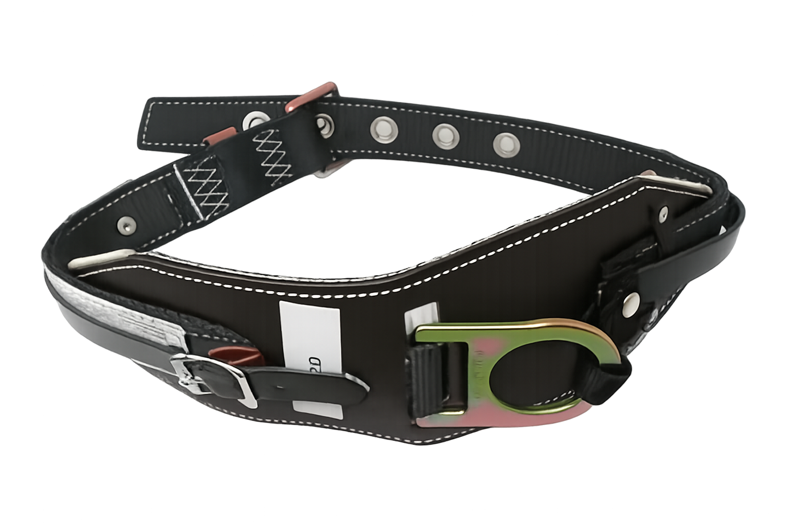

Preventing falls and ensuring secure positioning underground
Далд уурхайд ажиллаж буй хүмүүс аюулгүй байдлаа хангах, унахаас сэргийлэх зэрэг олон зорилгоор ашигладаг

Safety belts are essential for miners working at heights or near open shafts, providing protection against falls and enabling secure positioning during maintenance or inspection tasks.
They are designed to distribute impact forces evenly and prevent serious injuries.
Далд уурхайд өндөр хэсэгт эсвэл нээлттэй босоо амны ойролцоо ажиллаж буй уурхайчдын хувьд аюулгүйн бүс нь унахаас хамгаалж, засвар, үзлэгийн үед аюулгүй ажиллагааг хангах чухал хэрэгсэл юм.
Өндрийн бүстэй ажиллаж буй ажилтан хальтирах, унах үед бүс ачааллыг биед жигд хуваарилж, ноцтой гэмтлээс урьдчилан сэргийлдэг.
Prevents injuries from accidental falls.
Санамсаргүй уналтаас үүдэх гэмтлээс хамгаална.
Ensures a secure and comfortable fit.
Тогтвортой, биед эвтэй.
Resistant to wear, moisture, and corrosion.
Элэгдэл, чийг, зэврэлтэнд тэсвэртэй.
Meets international safety and ergonomic standards.
Олон улсын аюулгүй ажиллагаа, эргономикийн стандартыг хангасан.
1. What is the main purpose of a safety belt?
To prevent falls and injuries
To carry tools
To improve visibility
2. Why are adjustable straps important?
They ensure a secure and comfortable fit
They make belts waterproof
They reduce noise
3. What materials are used for safety belts?
Durable, corrosion-resistant materials
Paper and cloth
Rubber only